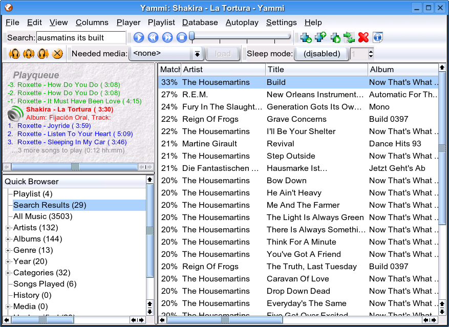
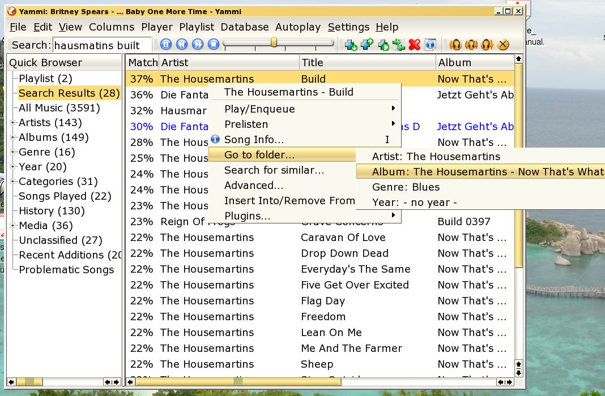
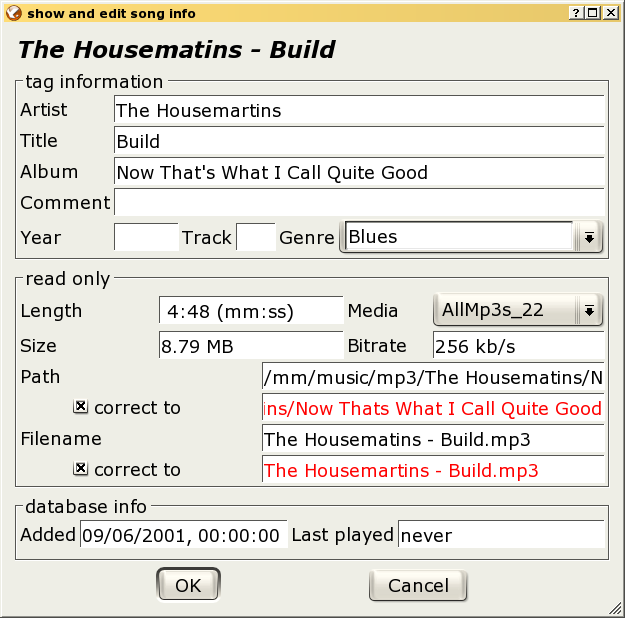
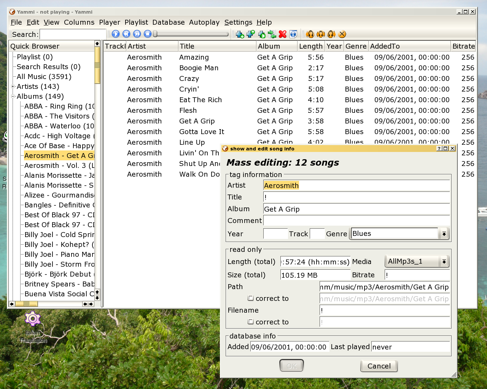
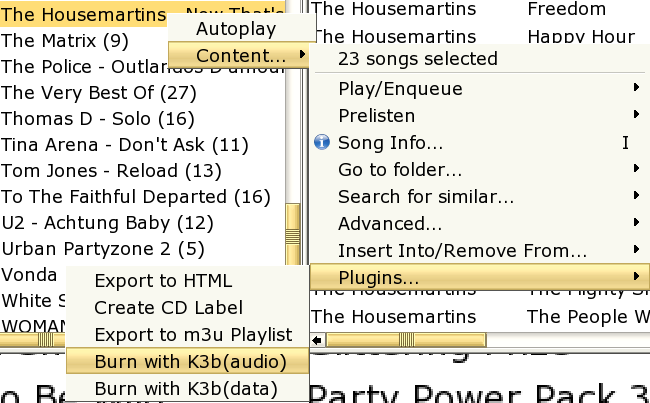

The Screenshots Tour through Yammi
Main Window / Fuzzy Search
This is the main window of Yammi, with the folder structure on the left, and (as a search is performed) the search results on the right.
Notice how the misspelled song ("Hausmatins - Built" instead of "The Housemartins - Build") gets found anyway:

Folder Navigation
Easily navigate from a song to its album/artist/genre/year folder (which are automatically generated and therefore always up-to-date):

Song Info
Notice how after correcting the misspelled title (inserting the missing "r" in "Housematins") the filename and path can be corrected automatically. The red color shows that the filename and path are not consistent with the configured naming scheme.

Mass Editing/Tagging
Now we work on all selected songs at the same time (eg. length and size are summed up). A "!" marks those entries that have different values for the selected songs.

Burn a Folder to CD
Just choose what you want to do with the selected songs from the context menu: Here we invoke the "Burn to Audio CD" plugin (which uses k3b). You can define your own plugins for this menu.
